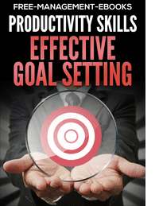

Boost Your Productivity with these Effective Goal-Setting Methods
By: Violet
Introduction
In this fast-paced world, time is the most precious resource. Everyone wants to achieve more in less time. Whether you are a student or a professional, achieving your goals efficiently is crucial for success. Unfortunately, setting goals is easier said than done. Most people have a vague idea of what they want to achieve, but they lack a proper plan to get there. That's where effective goal-setting methods come into play. By following time-tested techniques, you can boost your productivity and achieve your objectives faster than ever before. In this article, we'll explore some of the best goal-setting methods that can revolutionize your personal and professional life. From the SMART method to the Pomodoro technique, we'll cover everything you need to know to set goals like a pro. Whether you're struggling with procrastination, lack of motivation, or a lack of direction, our goal-setting methods have got you covered. So, let's dive in and learn how to make the most of your time and achieve your goals with ease.
ad space
1. Define your Goals
When it comes to achieving your dreams and making progress towards your aspirations, setting goals can be an incredibly effective tool. By giving yourself a clear target to aim for, you can better prioritize your efforts, measure your progress, and stay motivated on your journey. However, not all goals are created equal, and the way that you define your objectives can have a major impact on how successful you are in achieving them.
That's why our website is here to offer you a range of effective goal-setting methods that can help you achieve more than you ever thought possible. In this section, we'll be focusing specifically on defining your goals - the first step in any effective goal-setting process.
Many people make the mistake of setting vague or ambiguous goals, such as "be more productive" or "make more money". Without a clear definition of what success looks like, it can be difficult to know whether you're making progress or just spinning your wheels. Instead, take the time to clarify your goals and define them in detail. This might involve breaking them down into smaller, more manageable tasks, setting deadlines or objectives along the way, or even visualizing what success will look like when you achieve your goal.
Of course, defining your goals is just the beginning - but it's a crucial first step that can set the stage for all your future efforts. So take the time to consider what you really want to achieve, and then get specific about what success will look like. With the right mindset and a clear target in sight, you'll be well on your way to achieving your biggest dreams and making the most of your potential.
ad space
2. Prioritize your Goals
Successful goal setting hinges on the ability to prioritize your objectives. Without a clear sense of which goals are most important, it's easy to feel overwhelmed and unsure of where to start. By learning how to prioritize your goals, you can stay focused and move forward faster, achieving your most important objectives with greater efficiency and less stress.
To prioritize your goals, it's crucial to take a step back and evaluate each objective in the context of your overall vision and mission. Consider what you hope to accomplish in the long-term and how each goal aligns with these bigger picture aspirations. Then, use specific criteria to rank each objective according to its importance and relevance, such as urgency, impact, feasibility, and personal motivation.
Another key approach to prioritizing goals is to break down larger goals into smaller, more manageable milestones. This can help you tackle goals that may seem overwhelming or nearly impossible in the beginning. By approaching a large goal with a set of smaller pieces, you can stay motivated and celebrate your progress along the way.
Remember, too, that prioritizing your goals means making hard choices sometimes. It may mean saying no to certain opportunities or rearranging your schedule to make time for what's most important. But in the end, this kind of discipline and focus can lead to greater productivity, satisfaction, and success.
So, take a fresh look at your current goals and see where you can apply these priority-setting strategies. You may be surprised by how much clarity and momentum you can gain by simply taking the time to get your priorities in order.
ad space
3. Develop an Action Plan
One of the most crucial aspects of goal-setting is developing an action plan. It is a roadmap that outlines the steps you need to take to achieve your objectives. Without a clear plan, your goals may remain unfulfilled, and your productivity may suffer. Research has shown that individuals who develop a structured action plan are more likely to achieve their desired outcomes.
To create an effective action plan, you must begin by setting specific goals. Vague goals lead to confusion and can be demotivating. Clarity is key. Set measurable targets and establish timelines to achieve them. Break down your objectives into smaller, manageable tasks so that you don't feel overwhelmed.
The next critical step in creating an action plan is to list the steps required to achieve your goals. Identify the necessary resources, skills, and support needed for each step. Prioritize the most critical steps to achieve your desired outcomes. For example, if you are working towards a deadline, ensure that you schedule the critical and most time-consuming steps first.
Always be aware of the challenges that may arise when attempting to complete any task. Contingency planning is critical. Try to anticipate common obstacles and potential risks that may impact your progress. Finally, always measure and track your progress. It's essential to address and learn from your mistakes to adjust your plan and improve your productivity.
In summary, developing an action plan is crucial to achieving your goals and boosting your productivity. By setting specific objectives, breaking them down into manageable tasks, prioritizing critical steps, and contingency planning, you are well on your way to success. Keep track of your progress, stay true to your goals, and adjust your plan as needed, and you will undoubtedly achieve your desired outcomes.
ad space
4. Hold Yourself Accountable
Achieving your goals takes more than just setting them; you need to hold yourself accountable for following through. Accountability is crucial to success, as it helps you stay motivated, focused, and on track. In this article, we will explore four effective methods to help you hold yourself accountable and boost your productivity.
Firstly, start by setting realistic and specific goals. Vague and unrealistic goals can leave you feeling unmotivated and discouraged. Be specific about what you want to achieve and when you want to achieve it. This approach will help you break your goals down into smaller, more manageable tasks that you can monitor and track.
Secondly, track your progress. Keeping track of your progress is essential to hold yourself accountable. Track your progress regularly, and note the milestones you've reached, any setbacks, and what worked and what didn't. This way, you can learn from your experiences and make the necessary adjustments to ensure you achieve your goals.
Thirdly, create a support system. Surround yourself with individuals that share your passion and goals. They can help you stay motivated, offer insights and perspective on your progress, and provide you with the encouragement and support you need to keep going.
Finally, hold yourself accountable by setting rewards and consequences. Set rewards that will motivate you to keep going, and consequences that will keep you in check. These should be significant enough to inspire you to put in the necessary effort, but be realistic and achievable.
In conclusion, holding yourself accountable is an essential aspect of achieving your goals. By setting realistic and specific goals, tracking your progress, creating a support system, and setting rewards and consequences, you can stay motivated, focused, and on track, and ultimately boost your productivity.
ad space
5. Reward Yourself
Creating and achieving goals is key to success, but it can also be challenging to stay motivated throughout the journey. Rewarding yourself for milestones achieved can be a game-changer in staying positive and productive. In fact, studies have shown that dopamine, the “feel-good” chemical in your brain, is released when you set and achieve goals, and rewarding yourself only increases this positive feedback loop.
So, what are the best ways to reward yourself when you conquer those goals? Here are five effective methods to celebrate your success:
1. Treat yourself to something you’ve been wanting: Whether it’s a new pair of shoes or a fancy dinner, splurging on something you’ve been eyeing is a great way to celebrate your progress.
2. Take a break: After pushing through a long-term goal, sometimes the best reward is simply taking some time off to recharge your batteries. Book a weekend getaway or a spa day – whatever helps you feel refreshed and energized.
3. Celebrate with loved ones: Share your success with the people closest to you by planning a celebratory dinner or outing. Being surrounded by supportive family and friends will help amplify the positive emotions you already feel.
4. Invest in personal growth: Take an online course or workshop that interests you. Investing in your own development is not only a great reward, but it also sets you up for further success in the future.
5. Create a reward system: Create a tangible system with rewards for achieving milestones throughout your journey. For example, if you’re working on a weight loss goal, reward yourself with a new workout outfit every time you hit a certain milestone.
Remember, rewarding yourself shouldn’t be seen as indulgent or unnecessary. It’s a critical part of maintaining productive and positive momentum towards achieving your goals. So, next time you hit a milestone, take a moment to celebrate and give yourself a well-deserved pat on the back.
ad space
Conclusion
As we wrap up our discussion on effective goal-setting methods, it's important to remember that success is a journey, not a destination. While achieving our goals is undoubtedly satisfying, it's the process of pursuing them that brings us the most fulfillment in life.
Throughout this website, we've explored a range of practical and evidence-based techniques for maximizing productivity and achieving our goals. From SMART goal-setting to visualization exercises, mindfulness practices, and time-management strategies, there are countless ways to improve our focus, harness our motivation, and enhance our performance.
But beyond the practical tools and techniques, it's also crucial to cultivate a growth mindset and embrace the power of positive thinking. Cultivating a sense of optimism, resilience, and perseverance can make all the difference in the face of setbacks, challenges, and obstacles.
Ultimately, the key to effective goal-setting is a combination of intention, discipline, and flexibility. We must be clear about what we want to achieve, committed to taking consistent action, and open to adapting our plans as needed based on new feedback and data.
So, whether you're striving to progress in your career, improve your health, launch a new business venture, or pursue any other meaningful endeavor, remember that the journey is just as important as the destination. Use the goal-setting methods outlined on this website to fuel your progress and enjoy the ride!
ad space